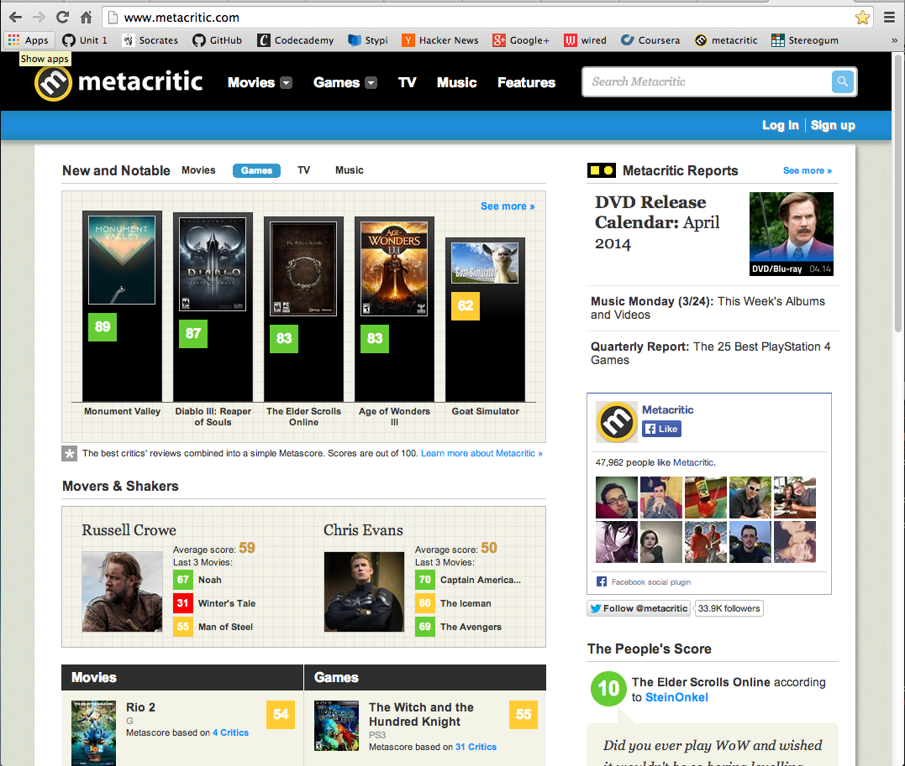

#1: Zappos.com
Zappos is one my favorite sites because it makes the entire shoeshopping experience simple . When I first open the site, my eyes are drawn to the search bar and the sidebar on the left. The orange search bar seems to 'pop' and it definitely stands out from the rest of the content. When I stand back, however, my eyes are drawn to the pictures in the center of the screen. Although the pictures in the center of the screen are not the most important part of the site, it doesn't bother me since the first thing that grabs my attention without standing back is the orange search button. Visually, I would describe the site as 'organized', 'polished', 'pretty', 'logical', and 'practical'. It's very easy to find what I'm looking for on the homepage.
This website solves the problem of the previously poor online shoe-shopping experience. It offers crazy-fast shipping, crazy-fast returns, great images of the shoes you are going to purchase, and an easy ordering experience. I would describe the content, focus, and purpose of the site as 'practical', 'efficient', 'informative', 'fun', and 'easy-to-use'. These descriptions are generally in-line with my visual descriptions.
Generally, I use this site to shop for shoes, so I either a) use the search bar, or b) click on the 'Shoes' link on the sidebar. It's also easy to find what I'm looking for from other pages, since the blue bar at the top is present on each page, and that blue bar has the general products offered (shoes, clothing, bags and handbags, etc.) Also present on each page is the search bar. It's easy browsing through all the content on the site - this site makes very good use of images, which are important when shopping.
After being on the site a while, I always feel like I want to look at 'just one more page of shoes' since the site is so nicely laid out and simple. The site sells many products, and I have purchased shoes many times from zappos. I purchase shoes from this site because it 1) makes the shoe-shopping experience simple and quick, and 2) the products ship fast.
#2: Google.com

I'm sure this stands true for many people, but Google is one of my favorties sites. Why? Because it is insanely simple, yet insanely powerful. When first opening the site, my eye is drawn to the search bar - the most important feature of the site. Standing back, my eye is still drawn to the search bar. Visually, I would describe the site as 'simple', 'straightforward', 'pretty', 'uncluttered', and 'organized'. Practically everything you see on the home page is useful - there is essentially no clutter.
This website solves the problem of not knowing where to go when you have a question. Type a question into Google's search bar and it will help you find an answer. I would describe the content, focus, and purpose of the site as 'practical', 'accurate', 'efficient', 'user-friendly', and 'simple'. These descriptions line up very well with my descriptions of its visual layout.
It's very, very easy to find what I'm looking for from the homepage. If I'm on another page, it's still also very, very easy. Just type whatever you're looking for into the search bar, hit enter, and BAM! let Google work its magic. Browsing through all content on the site is very easy. Search results are displayed in a simple list.
After being on the site for a while, I usually feel accomplished because I've found the answer to my question! The site does not sell anything directly, so I've never bought anything directly from google.com.
#3: Metacritic.com

Metacritic is one of my favorite sites because it gives me one place to go for movie, game, and music reviews. When I first open the site, my eye is drawn to the columns of ratings in the middle of the page. When i stand back, my eye is still drawn to that same area. In my opinion, this is the most important part of the site, because generally when I'm looking at metacritic, I'm not searching for a specific title but rather browsing to see what new movies/games/albums have been released. Visually, I'd describe the site as 'pretty', 'modern', 'flashy', 'colorful', and 'elegant'.
This website solved the problem, or annoyance, of having to go to multiple sites for reviews of different media. Metacritic combines the three media behemoths - movies, games, and music - and offers reviews on one site. I would describe the content, focus, and purpose of the site as 'fun', 'flashy', 'informative', 'easy-to-digest', and 'sleek'. I'd say this description lines up pretty well with the visual description.
As I described earlier, I'm usually using the site to browse for ratings of new media, rather than to specifically search for a paricular movie, game, or album rating. However, if I do need to search for a particular rating, the search bar is very easy to use. The search bar is available on any page on the site (not just the homepage), so this makes it easy to search for a particular review no matter where I am at on the site. Browsing content on the site is a joy, and the ratings displayed as visual columns makes it very easy to quickly digest multiple ratings.
After being on the site a while, I feel informed and relaxed. I'm usually just browsing for new releases, and the site makes it very easy to do so. I've never bough anything off the site (I don't believe they sell anything).